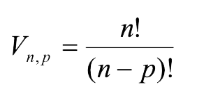
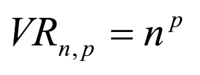
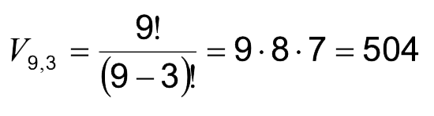
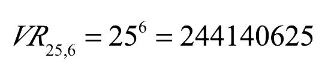
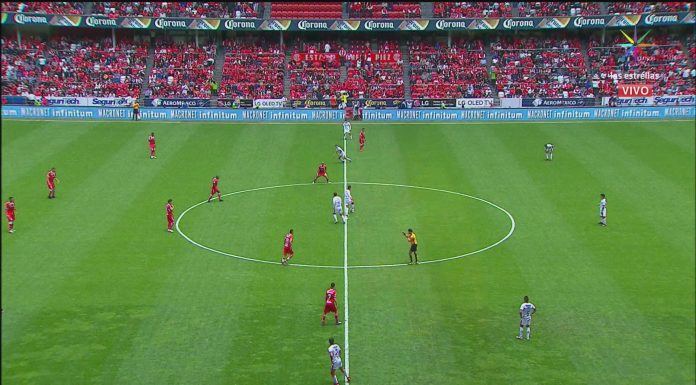

Situación inicial
Las variaciones sin repetición de n elementos tomados de p en p se definen como las distintas agrupaciones formadas con p elementos distintos, eligiéndolos de entre los n elementos de que disponemos, considerando una variación distinta a otra tanto si difieren en algún elemento como si están situados en distinto orden.
El número de variaciones que se pueden construir se puede calcular mediante la fórmula:

Las variaciones con repetición de n elementos tomados de p en p se definen como las distintas agrupaciones formadas con p elementos que pueden repetirse, eligiéndolos de entre los n elementos de que disponemos, considerando una variación distinta a otra tanto si difieren en algún elemento como si están situados en distinto orden.
El número de variaciones que se pueden construir se puede calcular mediante la fórmula:

Ejemplos
Como podemos ver en este caso nos preguntas por cifras de 3 dígitos que no se pueden repetir por lo que estamos frente a una variación sin repetición por lo que se calcularía como sigue:

Por lo que podemos concluir que se pueden formar 504 números de 3 cifras distintas utilizando los dígitos del 1 al 9.
2. Con las letras del alfabeto español (25 letras) ¿Cuántas palabras (con o sin sentido) de 6 letras distintas pueden formarse?
En este ejemplo lo que se pide es que calculemos la cantidad de palabras de 6 letras que podemos formar con las letras del alfabeto (25 letras), teniendo la posibilidad de reptir las letras ya que en ninguna parte nos dicen que no sea así, por lo que el calculo sería de la siguiente manera:

Lo que nos indica que podemos formar 244.140.625 palabras distintas de 6 letras con las letras del abecedario.
¿De cuántas maneras diferentes se pueden sentar los 22 alumnos del grupo de matemáticas de III medio de tu establecimiento en una sala que dispone de 35 asientos?
es una fiesta deportiva se realizá cada año en Santiago, maratonistas que recorrerán 8 comunas de la capital hasta llegar a la meta, mientras que en medio maratón se inscribieron 14.817 personas y 11.837 en 10K.
Supongamos que en una maratón escolar en la que corren 2000 personas, necesitamos saber de cuántas maneras distintas podemos entregar los premios a los 3 primeros lugares, teniendo distintos premios para las diferentes posiciones.
¿Cuántas posibles formas podrían llegar los competidores en las 3 primeras posiciones?
¿Cuántos son los resultados posibles de dos equipos de futbol que se enfrentan en 5 partidos?

Obra publicada con Licencia Creative Commons Reconocimiento Compartir igual 4.0